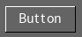
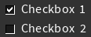
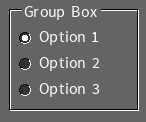
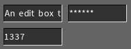
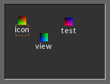
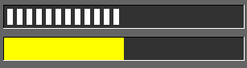
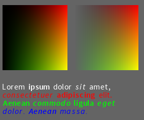
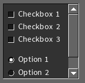
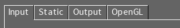

|  |
A simple push button that generates an event when clicked and
released (SGUI_BUTTON_OUT_EVENT). Can also be configured to act as
a toggle button to stay in a state (either in or out) and generat events
on state change (SGUI_BUTTON_IN_EVENT,
SGUI_BUTTON_OUT_EVENT). Toggle buttons can be grouped together like
radio buttons, where exactely one button can be selected at a time. |
When the selection in a group changes, the one that gets selected triggers
an SGUI_BUTTON_IN_EVENT event. Buttons are not restricted to text
but can also display icons inside them.
|  |
Checkboxes as we know them. Generates an event when checked or
unchecked (SGUI_BUTTON_IN_EVENT, SGUI_BUTTON_OUT_EVENT) |
|  |
A radio button looks like a checkbox, but with a circular area to
the left. Several radio buttons can be connected to a group. In a group of
radio buttons, only one at a time can be selected. When the selection in a
group changes, the one that gets selected triggers an
SGUI_BUTTON_IN_EVENT event.
|
|  |
A box that text can be entered into. Text can be selected and
copied/pasted via the systems clipboard. An edit box can optionally
only allow numeric input, or not show the entered text (password) |
|  |
An icon view can display an assortments of icons with text
underneath them. Icons can be clicked and draged around inside the view
area. An SGUI_ICON_SELECTED event is generated when a selected
icon gets double clicked or the return key is pressed. Similar events
are generated when a delete/copy/cut key combination is sent to an
icon. |
 |
This is a progress bar. It indicates progress. As you can see,
there are different styles (continuous and stippled). Vertical progress
bars, that are filled from bottom to top, also exist. |
|  |
Static images and static text for displaying purposes |
 |
The black rectangle with a triangle inside is a subview widget.
It manages a sub window. In this case, the sub window has an OpenGL®
context bound to it and is redrawn by a callback. |
|  |
The outermost rectangle is a frame widget. It simply displays
widgets in an inset box. Children can be attached with
sgui_widget_add_child and the frame will automatically display scroll bars
when it overflows. |
|
This is a group box widget. It just draws a fancy border with a
caption around its children to visually seperate and functionally group
other widgets. Children can be added with sgui_widget_add_child. |
|  |
This image show the captions of a tab group widget. Children are
arranged in tabs. The function sgui_tab_group_add_widget is used to add
widgets to specific tabs. |